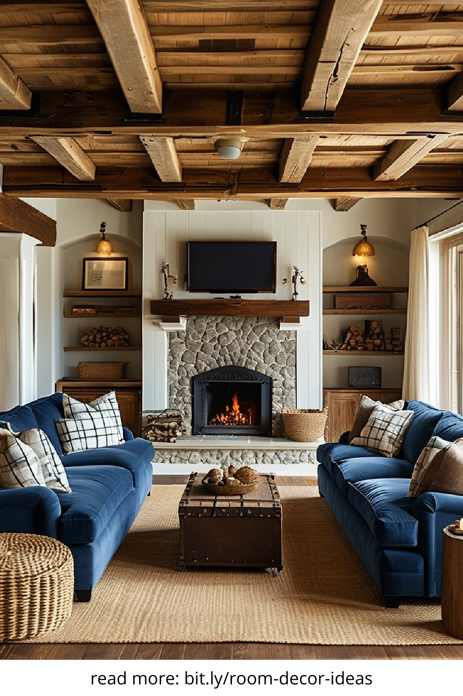
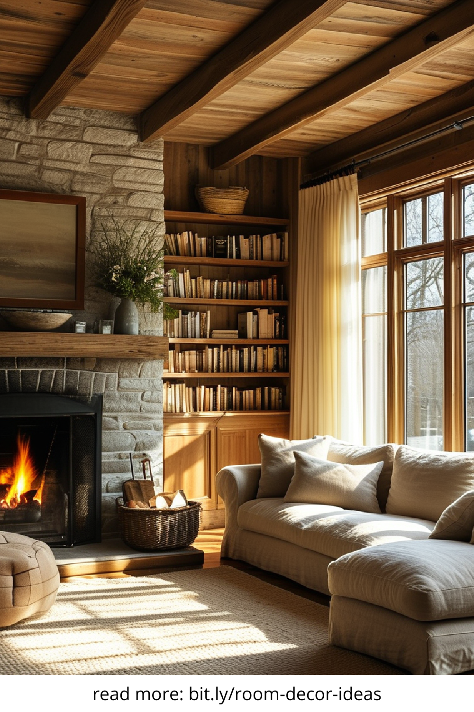
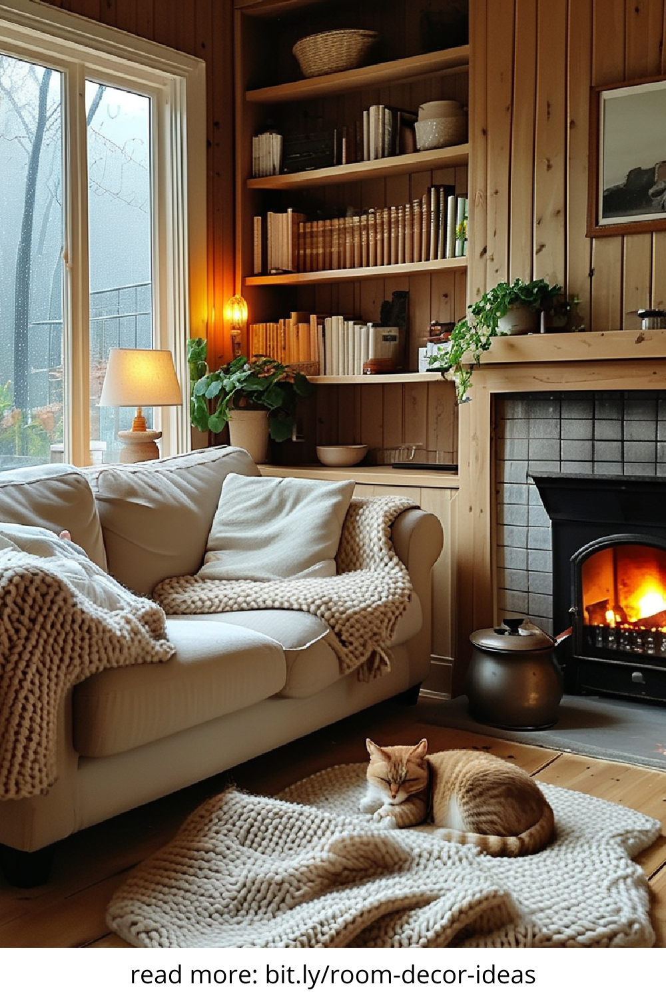
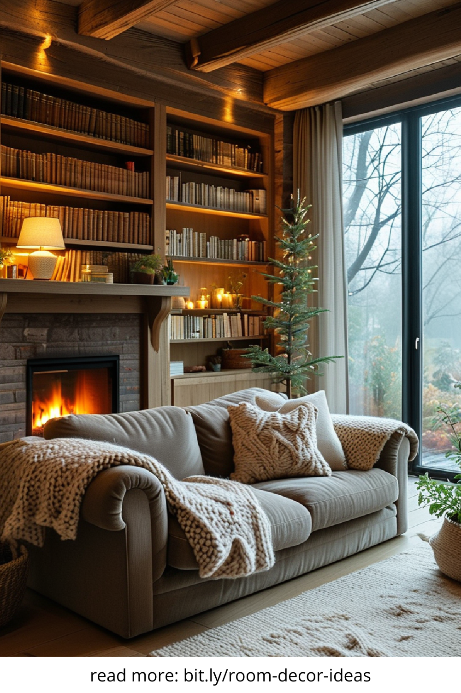

A cosy living room is more than just a trend—it's a sanctuary. Whether you're unwinding after a long day or entertaining guests, creating a warm and inviting space enhances both comfort and functionality. These cosy living room ideas will inspire you to transform your home into a stylish, snug retreat.
One of the most effective ways to make a living room feel cosy is through lighting. Swap harsh overhead lights for softer alternatives like floor lamps, table lamps, or wall sconces. Dimmer switches and warm white bulbs (2700K to 3000K) allow you to adjust the brightness to suit any mood or time of day. Candles and fairy lights also add ambient warmth that invites relaxation.
To achieve a truly cosy atmosphere, layer various textures throughout your living room. Mix and match soft textiles such as knitted throws, velvet cushions, shag rugs, and linen curtains. These layers not only provide tactile comfort but also add visual interest to your decor. Even small additions like a faux fur stool or a handwoven basket can dramatically increase the cosy factor.
Color plays a crucial role in creating a comforting vibe. Earthy tones—like terracotta, olive green, deep browns, and creamy neutrals—evoke a grounded, natural feel. These hues tend to absorb rather than reflect light, adding to the warm ambience. You can also include muted shades of blue or dusty rose for subtle colour variation that maintains a cosy aesthetic.
Make your living room feel like home by incorporating meaningful personal touches. Display family photos in eclectic frames, stack your favorite books on open shelves, or hang art that tells your story. Adding heirlooms, travel souvenirs, or handmade pieces brings authenticity and emotional warmth to your space, turning it into a true reflection of you.
Investing in plush seating and soft furnishings is essential for creating a space that invites you to sink in and stay a while. Opt for overstuffed sofas, cushioned ottomans, and armchairs with supportive padding. Adding extra throws and cushions in seasonal fabrics—like wool for winter or cotton for summer—ensures year-round comfort without sacrificing style.
Rugs are powerful tools in making any room feel grounded and cohesive. In a living room, they visually define the seating area and add an extra layer of softness underfoot. Choose thick, high-pile rugs for maximum cosiness. Natural materials like wool or jute also contribute texture and warmth, tying the room together beautifully.
Plants do more than purify the air—they also contribute to a soothing environment. Consider adding leafy greens like ferns, pothos, or rubber plants to soften corners and bring life into your living room. If you lack a green thumb, high-quality faux plants or dried flowers can still offer a natural, calming aesthetic.
Every cosy living room needs a focal point. This could be a fireplace, a gallery wall, a large piece of art, or even a styled coffee table. A strong focal point helps anchor the space and makes it feel intentional and thoughtfully designed. Layer the surrounding decor to draw attention without creating visual clutter.
Cosiness doesn’t require chaos. While layering is key, be mindful not to overcrowd your space. Choose a few well-curated pieces that serve both function and style. Closed storage like cabinets or baskets can hide away miscellaneous items, maintaining a clean, serene environment that still feels lived-in and warm.
Finally, keep your living room feeling fresh and cosy all year round by rotating decor seasonally. In cooler months, add chunky knits, darker colours, and extra blankets. For spring and summer, switch to lighter fabrics, pastel tones, and fresh blooms. This approach keeps your space dynamic while preserving its comfort-focused appeal.
With these cosy living room ideas, you can craft a space that feels like a warm hug every time you walk in. Whether you're redecorating completely or just adding a few soft accents, focusing on comfort, lighting, and personal style will help you create a home that's as functional as it is inviting.
   